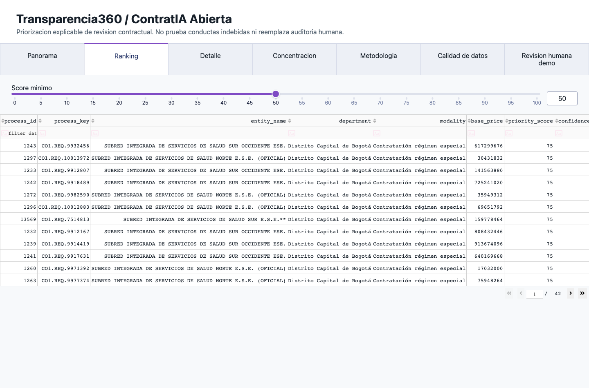

Modelo relacional
PostgreSQL es la fuente de verdad.

27 tablas relacionales con PK/FK, constraints e índices; 33 objetos públicos incluyendo vistas.
Demo
Panorama, ranking, detalle y comparables.
 1 Panorama
1 Panorama
2 Ranking 3 Detalle
3 DetalleCierre
Validación final: proyecto reproducible y defendible.
Límites: datos ruidosos, joins imperfectos, requiere revisión humana.
Siguiente: encuesta real con 5 usuarios y piloto controlado.